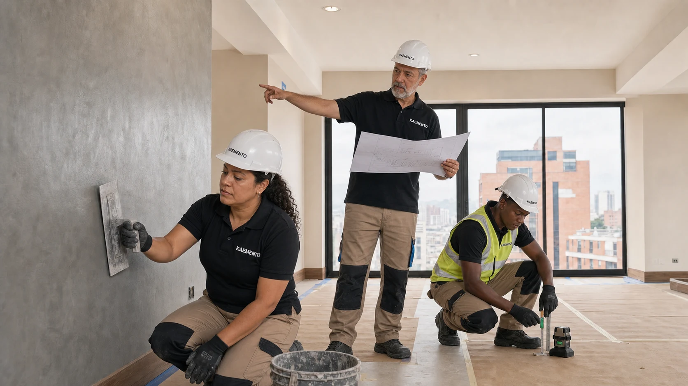
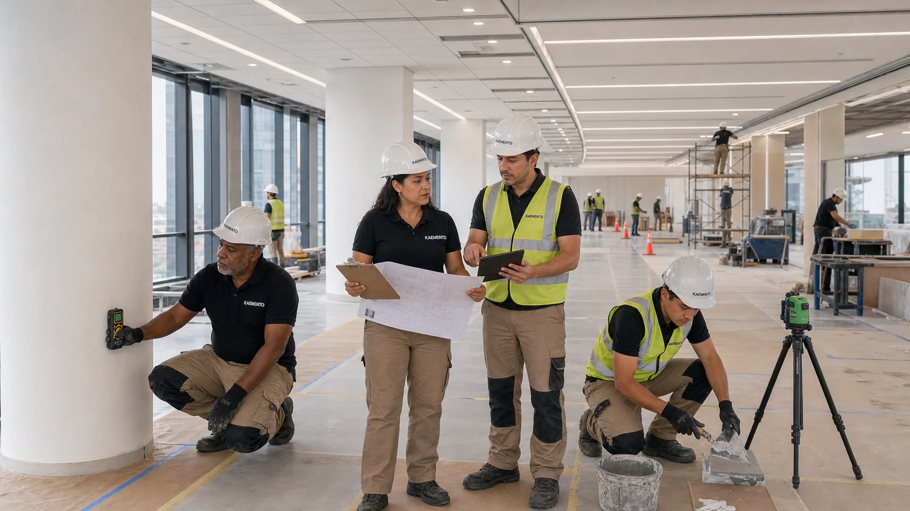
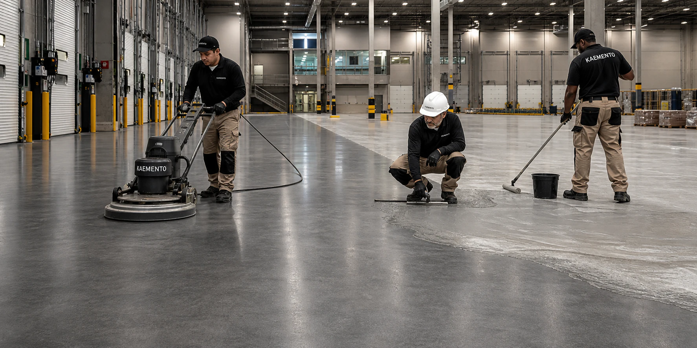
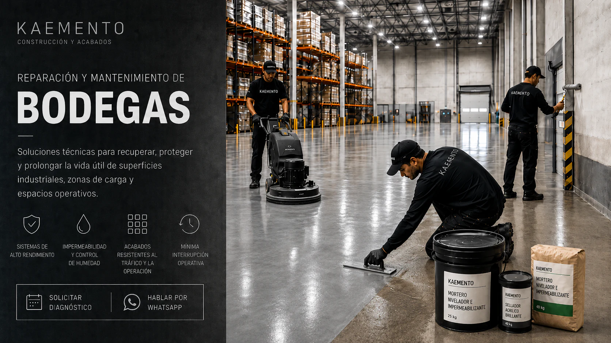

Construcción
Proyectos arquitectónicos y obras civiles
Diseño, planeación, adecuaciones, remodelación y ejecución llave en mano.
Ver especialidad ↗CAPACIDAD INTEGRAL
Servicios organizados por necesidad para vivienda, propiedad horizontal, comercio, instituciones, bodegas e industria, con cobertura nacional.
MENÚ DE SERVICIOS
Use los filtros para ver las líneas relacionadas con construcción, mantenimiento y superficies técnicas.

Diseño, planeación, adecuaciones, remodelación y ejecución llave en mano.
Ver especialidad ↗
Intervenciones preventivas y correctivas con diagnóstico y programación.
Ver especialidad ↗
Recuperación, sellado y protección de fachadas, cubiertas y zonas húmedas.
Ver especialidad ↗
Sistemas continuos, nivelación, protección y mantenimiento especializado.
Ver especialidad ↗
Recuperación de pisos, control de humedad, señalización y mínima interrupción.
Ver especialidad ↗
Superficies resistentes a operación, tráfico, abrasión y humedad.
Ver especialidad ↗
Pisos, muros, escaleras y mobiliario como un sistema integral.
Ver especialidad ↗DIAGNÓSTICO TÉCNICO